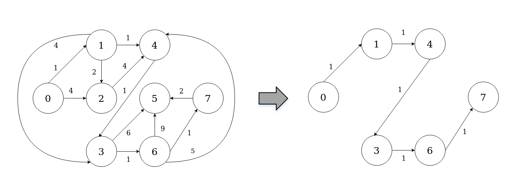

Shortest-path ASP C#¶
Getting started¶
The framework is released as DLL file to be used on a Desktop platform, therefore it can be easily added and used in any C# project.
Using EmbASP¶
In the following, we describe an actual usage of the framework by means of a running example; as a use case, we will develop a simple Desktop application to solve the shortest-path problem.
The complete code of this example is freely available here.
We will make use of the annotation-guided mapping, in order to create C# object constituting ASP predicates.
To this purpose, the following classes are intended to represent possible predicates that an ASP program can use:
[Id("edge")]
class Edge
{
[Param(0)]
private int from;
[Param(1)]
private int to;
[Param(2)]
private int weight;
public Edge(int from, int to, int weight)
{
this.from = from;
this.to = to;
this.weight = weight;
}
[Id("path")]
class Path
{
[Param(0)]
private int from;
[Param(1)]
private int to;
[Param(2)]
private int weight;
public Path(int from, int to, int weight)
{
this.from = from;
this.to = to;
this.weight = weight;
}
At this point, supposing that we have embedded the DLV2 solver in this project, we can start deploying our application:
class ShortestPath
{
private static int from, to; // source and destination node
private static List<int> sortedPath; // edges in the shorted path (sorted)
public static void Main(string[] args)
{
try
{
Handler handler = new DesktopHandler(new DLV2DesktopService("../../../executable/dlv2.win"));
ASPMapper.Instance.RegisterClass(typeof(Edge));
ASPMapper.Instance.RegisterClass(typeof(Path));
InputProgram input = new ASPInputProgram();
from = 0;
to = 7;
String rules = "from(" + from + ").to(" + to + ")." +
"path(X,Y,W) | notPath(X,Y,W) :- from(X), edge(X,Y,W)." +
"path(X,Y,W) | notPath(X,Y,W) :- path(_,X,_), edge(X,Y,W), not to(X)." +
"visited(X) :- path(_,X,_)." +
":- to(X), not visited(X)." +
":~ path(X,Y,W). [W@1 ,X,Y]";
input.AddProgram(rules);
foreach (Edge edge in getEdges())
{
input.AddObjectInput(edge);
}
handler.AddProgram(input);
AnswerSets answerSets = (AnswerSets)handler.StartSync();
foreach (AnswerSet answerSet in answerSets.GetOptimalAnswerSets())
{
List<Path> path = new List<Path>(); // edges in the shortest path (unsorted)
int sum = 0; // total weight of the path
foreach (object obj in answerSet.Atoms)
{
if (typeof(Path).IsInstanceOfType(obj))
{
path.Add((Path)obj);
sum += ((Path)obj).getWeight();
}
}
join(from, path, sortedPath); // sorts the edges
print(sortedPath, sum); // show the result
}
}
catch (Exception e)
{
Console.WriteLine(e.Source);
}
}
private static List<Edge> getEdges()
{
List<Edge> edges = new List<Edge>();
edges.Add(new Edge(0, 1, 1));
edges.Add(new Edge(0, 2, 4));
edges.Add(new Edge(1, 2, 2));
edges.Add(new Edge(1, 3, 4));
edges.Add(new Edge(1, 4, 1));
edges.Add(new Edge(2, 4, 4));
edges.Add(new Edge(3, 5, 6));
edges.Add(new Edge(3, 6, 1));
edges.Add(new Edge(4, 3, 1));
edges.Add(new Edge(6, 4, 5));
edges.Add(new Edge(6, 5, 9));
edges.Add(new Edge(6, 7, 1));
edges.Add(new Edge(7, 5, 2));
return edges;
}
[...]
}
The class contains an Handler instance as field, that is initialized with a DesktopHandler using the parameter DLV2DesktopService with a string representing the path to the DLV2 local solver.
The ASPMapper registers the classes created before in order to manage the input and output objects.
A string and a list of Edge representing facts, rules and constraints of the ASP program are added to an ASPInputProgram, and the ASPInputProgram is added to the Handler.
Finally the solver is invoked, and the output is retrieved.
The output predicates can be managed accordingly to the user’s desiderata. In this example the Path predicates, that represent the shortest path, are collected, sorted, and printed as well as the total weight of the path.
For further information, contact embasp@mat.unical.it or visit our website.